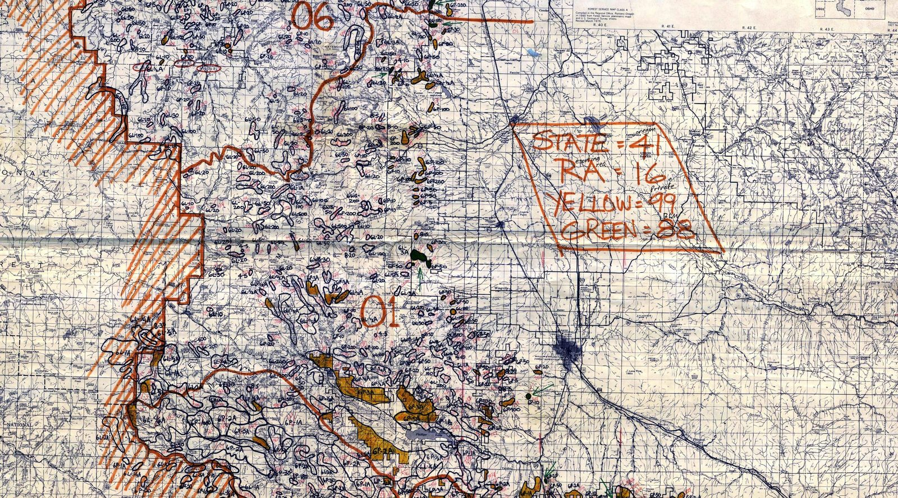
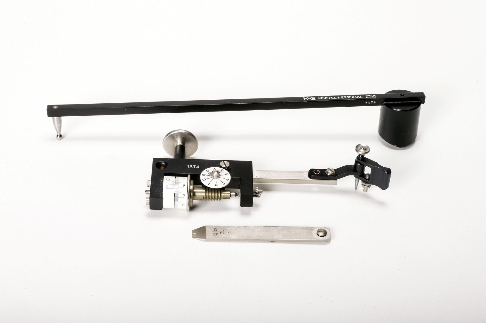
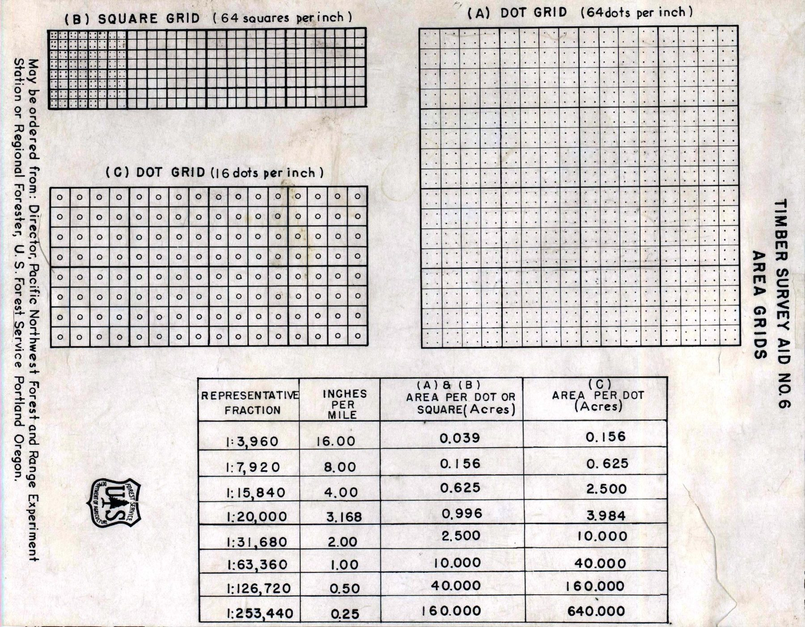

File 001
The Map Room: Answering Geographic Questions by Hand
Before computers, a question like how much good farmland is under forest took two map sheets, a table lit from below, and a lot of counting. The next question meant new outlines and a new count.
In 1979, the US Forest Service in Oregon and Washington was still answering geographic questions with paper maps, transparent grids, and a lot of counting. Every year, survey crews flew over the region’s national forests and sketched the damage from insects and disease onto paper maps, one outlined patch at a time (Fig. 1). Back in the office, staff measured every patch by hand and added up the acres for each reporting area and each landowner1,2. The region kept working that way until 1988, when it got its first geographic information system (GIS), the Map Overlay and Statistical System1.


The method was decades older than the survey, and it was the standard way to answer any question that needed two maps at once. Take one a planner might ask: how much of a county’s good farmland is still under forest? One map rated what the land could support, in classes from best to worst. Another showed what the land was being used for. Neither could answer alone, because the answer lay only where the two agreed. Measuring the area of something like woodland on a map was, as two cartographers put it in 1969, “a common problem in many kinds of land use and land classification studies”3.
Answering it by hand usually took four jobs:
- Bring both maps to the same scale and the same sheet edges, on material that wouldn’t stretch4,5.
- Lay one over the other on a glass table lit from below, so the lower sheet’s lines show through the upper one, and outline every patch where good land and forest coincide5.
- Measure each patch, by tracing it with an instrument called a planimeter or by counting dots on a transparent grid6.
- Add up the patches for each county or district2.
Tracing needed a steady hand and counting needed patience. Some of the work could be saved for next time: the lined-up sheets, and the traced outline of the good land. The outlines of the overlap and the tally could not. They answered one question, and a different question meant new outlines and a new count. Taking over those outlines and tallies is what the first computer systems for maps set out to do.
Every map started as a sheet that moved
Every one of those outlines started on a printed sheet. Map sheets came cut to national grids, each at a fixed scale, the ratio of a distance on the map to the same distance on the ground. Canada’s standard topographic sheet is drawn at 1:50,000, where 1 cm on the map is 500 m on the ground7. It takes 13,150 of them to cover the country8. From about 1950, the standard American sheet was the 7.5-minute quadrangle, bounded by lines of latitude and longitude 7.5 minutes apart, at 1:24,000, where an inch on the map is 2,000 feet9.
Sheets were also paper, and paper moves. Damp air swells it and dry air shrinks it. The US Geological Survey (USGS) planned around that. Its 1928 instructions had field surveyors draw on two layers of paper mounted on either side of a cloth, with the grains crossed, and fix the sheet to the plane table, a drawing board on a tripod, “by brass thumbscrews or tacks, to reduce to a minimum the expansion or contraction caused by changes in climatic conditions”10.
Printers had the same trouble. Erwin Raisz, a cartographer at Harvard’s Institute of Geographical Exploration, explained in his 1948 textbook that each color of a map was drawn on its own sheet, “usually made on vellum because it does not change its shape and size with humidity,” and that “each drawing must have register marks for perfect overprint”5. Getting two sheets to line up is called registration. Every overlay started with it.
Overlay worked only when the sheets lined up
With two sheets registered, one of them had to become see-through, and drafting rooms had the furniture for it. Raisz’s own drawing table had an 8-by-10-inch pane of thick glass set into its top, with a lamp underneath. He called it a simpler version of “the large tracing table with a glass top and a number of lamps,” and a caption in his book says that “copying maps and drawing color overlays is best done over the transparent table”5. The big ones ran hot. When the draftsman Eric Tallis joined the drawing office of Britain’s Geological Survey in 1946, its light box “contained about 30 tungsten lamps and in use became hot enough to fry an egg”11.
The overlay itself was simple to describe and slow to do. A technician traced the boundaries of one map onto translucent film, laid the film over the other map on the lit glass, and drew each patch where an outline on the film enclosed the right kind of ground beneath (Fig. 2).

Some of the clearest descriptions of the hand method come from the people who replaced it. In 1967 Roger Tomlinson, data processing coordinator of the Canada Land Inventory, a national survey of what Canada’s land was used for and what it could support, described the computer system the inventory was building. He called overlay “the well-known function of putting one map over another and examining the resultant data relationships.” He also noted that, “as with the manual method of overlaying maps,” the maps had to be “at a common scale and frame size,” meaning the same scale and the same sheet edges4.
Getting there took real work. The inventory mapped land use on 1:50,000 sheets wherever they existed. Where they didn’t, its mappers worked on whatever base they could find, at scales from about 1:40,000 to 1:63,360, then rescaled it photographically to 1:50,000 and traced it onto blank sheets of drafting film “prepared to a master grid”12. Every extra map meant another layer to see through and another set of copied lines that could drift.
Every patch was measured by hand
An outline traced from those maps isn’t an answer yet. Someone still had to turn each patch into acres or hectares. A 1957 Forest Service guide named the “principal devices for area measurement”: “polar planimeters, transects, and dot grids”6. The planimeter was already a century old.
The Swiss mathematician Jakob Amsler designed the polar planimeter in 1854 and described it in print in 185613,14. It’s two arms hinged together (Fig. 3). One ends in the pole, a weighted point pressed into the paper. The other carries a small measuring wheel and ends in a tracing point. You set the point on the outline, read the wheel, trace the outline clockwise back to the start, and read the wheel again. The difference, times a constant for the map’s scale, is the area15.


The trick is in the wheel. It turns only when the tracing arm moves sideways, across its own length, and over a closed loop its total roll times the arm’s length equals the area inside16. Mathematicians explain it with Green’s theorem, the same result that gives the shoelace formula a GIS uses today to compute a polygon’s area from its corners.
In careful hands the instrument was very good on big shapes and worse on small ones. Tests reported in a 1903 manual put the average error at about 0.08% for a figure of 200 cm² and about 2.6% for one of 5 cm²15. Users traced each patch at least twice and averaged the readings6. Walter F. Wood, a geographer at the State University of Iowa who was making the case for dot grids, spelled out the catch in 1954. The reading “will be accurate if the operator has a very steady hand and traces the boundary with utmost care, and if the surface of the map is neither too smooth nor too rough”17.
The other way was to count. Lay a transparent sheet ruled into small squares over a patch and you turn area into a tally, but you have to judge every square the boundary cuts through. A grid of dots removes most of that judgment. Each dot stands for a fixed area at the map’s scale, and you count the dots inside the outline. In a 1939 test at the Forest Service’s Appalachian Forest Experiment Station, C. A. Abell checked both methods against planimetered areas. Dots were off by 1.84% on average and squares by 4.50%, and the dots took two-thirds of the time18. Squares were still the most common alternative to the planimeter in 1954, when Wood warned that with them “the same area measured on successive days by the same operator may appear to have either grown or shrunk in the meantime”17.
The Forest Service printed its grids on transparent cards. One from its Pacific Northwest research station, Timber Survey Aid No. 6, carries grids of 16 and 64 dots per square inch and a table of acres per dot at eight map scales (Fig. 4)19. On a 1:20,000 air photo, a usual scale for the 64-dot grid, each dot stands for 0.996 acre, near enough to an acre a dot6,19. In 1969 the cartographers Y. S. Frolov of Leningrad University and D. H. Maling of University College of Swansea showed that about 100 dots inside a parcel kept the relative error to about 1.5%3.


A test sheet gives a close answer to one question
To see how close a count of dots gets, take an invented test area, 12 by 8 km, with 26 parcels rated for farming from class 1 (best) to class 7 (worst) and 20 parcels of land use. Printed at 1:50,000, it fills a sheet 24 by 16 cm. The question, in the test area’s terms: how much class 1–2 land is under forest? The true answer is 1,079.3 ha, in two patches (Fig. 5). Here is what a dot count gives with the grid dropped at 200 random positions.
| Grid | Each dot stands for | Dots counted, typically | Nine counts in ten fall between |
|---|---|---|---|
| 16 dots per square inch | 10.1 ha | about 107 | 1,038 and 1,109 ha |
| 64 dots per square inch | 2.52 ha | about 428 | 1,061 and 1,096 ha |
The finer grid lands within 2% of the true area. These are ideal counts, though, with no tracing error, no tired eyes, and test parcels with straight sides. Real boundaries are more irregular, and a 1975 study for the Canadian Forestry Service found that a dot count’s error depends on a parcel’s shape as well as on how many dots fall inside it20.
Fig. 5The forested class 1–2 land on the test sheet, with a grid of 16 dots per square inch laid over it. Only the dots inside the outlines count: 103 in this placement.Drawing: The Shape-Files · invented test area, no real location
And the count answers only the question it was made for. Ask how much class 1–2 land is under cropland, and the traced outline of the class 1–2 land can be reused, but the overlap is different: 1,031.2 ha in three patches, each needing a new outline and a new count. Class 3–4 land under pasture, 937.0 ha in four patches, needs a fresh tracing of the capability map as well.
A national inventory chose a computer instead
Now multiply that by a country. The Canada Land Inventory, approved by the federal government in October 1963, set out to map how land was used, and what it could support for agriculture, forestry, recreation, and wildlife, across roughly a million square miles4,21. It planned on a computer from the start, and Tomlinson’s report dates the start of the system’s design to 19634. The inventory’s program report later gave the reason in one sentence: “Conventional methods of map compilation, area measurement and comparison between maps and statistical tables, would have imposed severe restrictions on the inventory program”21. The computer still needed every map traced by hand, but only once. After that, the computer did the overlays and the measuring4.
Where it shows up today
The computer took over the four jobs, and they’re still there under other names. Lining up two maps is now a matter of coordinate reference systems, the definitions that tie coordinates to places on the Earth, and of converting data between them. In QGIS, a free desktop GIS, laying one map over another is one run of the Intersection tool, which “extracts the portions of features from the input layer that overlap features in the overlay layer”22. Each piece’s area comes from its corners, by the same mathematics as the planimeter, and the county totals are one more summary. The big change is that the outlines are stored. The cropland question starts from the same two layers, not from paper.
Even perfect sheets never fit together perfectly. The 1928 USGS instructions noted that, in theory, sheets each drawn on their own projection leave “small gores” between rows laid edge to edge, because each sheet is a flat drawing of a piece of a curved Earth10. Drawing even one sheet depended on knowing how the Earth curves, and that took centuries of measuring.